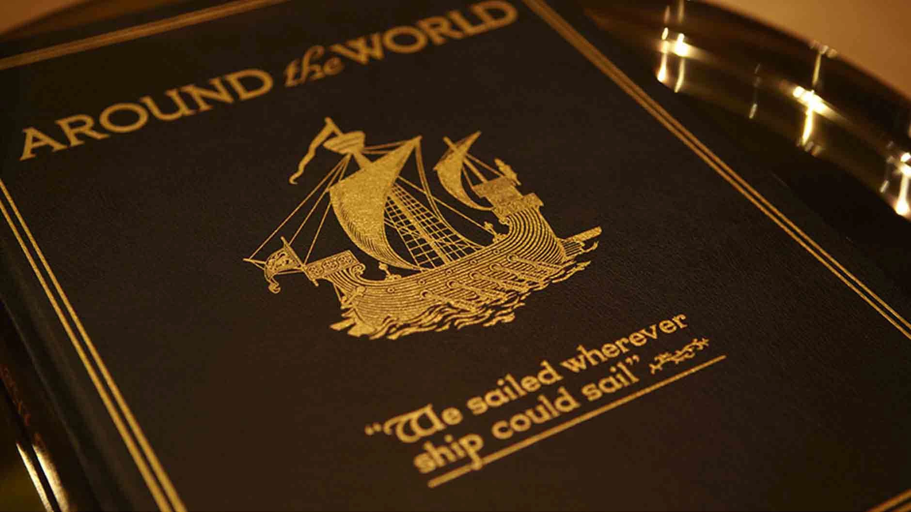
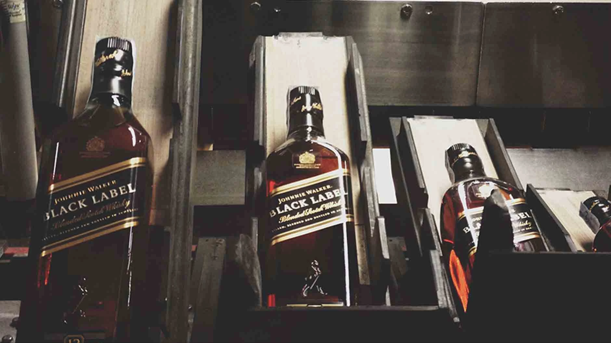
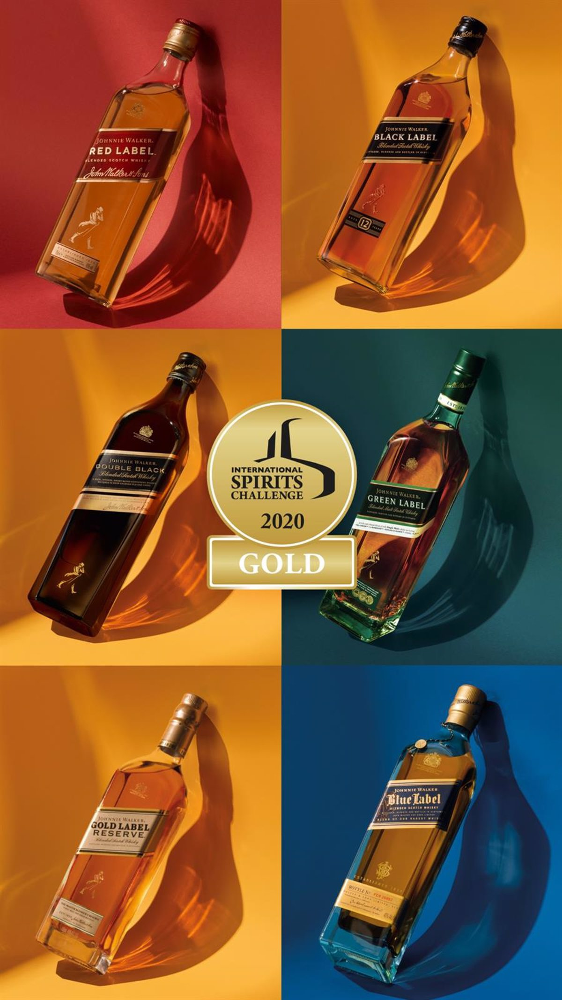

En 1867, lanzó la primera mezcla comercial de Johnnie Walker y la llamó Old Highland Whisky. Luego hizo un movimiento astuto convirtiendo a capitanes en sus agentes para llevar su whisky a cualquier lugar al que pudieran navegar los barcos. En poco tiempo, su mezcla única estaba disponible en todo el mundo.
Poco tiempo después, Alexander empezó a usar la famosa botella cuadrada para reducir el riesgo de rupturas y se aseguró de que una mayor cantidad de su whisky llegara intacta a su destino. También agregó la etiqueta distintiva, inclinada a exactamente 20 grados, para hacerla destacar aún más entre la multitud.

En 1920, el whisky Johnnie Walker estaba en 120 países. A medida que el siglo avanzaba, se convirtió en parte de la cultura global: inmortalizado por cantantes y cineastas, idolatrado por socialités y estrellas de cine, disfrutado por políticos y caminando hombro a hombro con los grandes deportistas y mujeres de la época.
El 1 de enero de 1934, a John Walker & Sons le fue otorgada una Garantía Real por el Rey George V para abastecer de whisky a la Casa Real. Hoy, todavía mantenemos una Garantía Real.

Al final del siglo 20, a la mezcla pionera Johnnie Walker Red Label y al icónico Johnnie Walker Black Label se había unido la cúspide del arte mezclador: Johnnie Walker Blue Label. Nuestra variedad galardonada continua creciendo, con la inclusión de Johnnie Walker Gold Label Reserve y Johnnie Walker Platinum Label.

Hoy, Johnnie Walker es la marca de whisky más grande del mundo y su eslogan ha sido adoptado y acuñado en todas partes como un grito de batalla para inspirar el progreso, como coraje en la adversidad, como una expresión de alegría y optimismo y como el mejor consejo que alguien siempre está dispuesto a recibir.